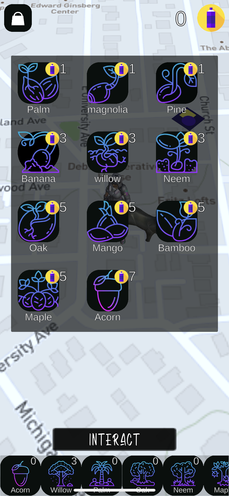
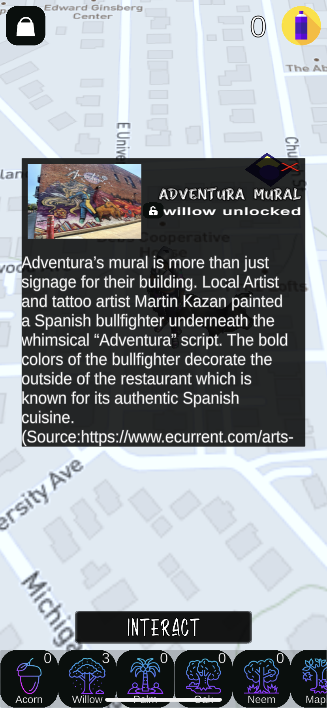
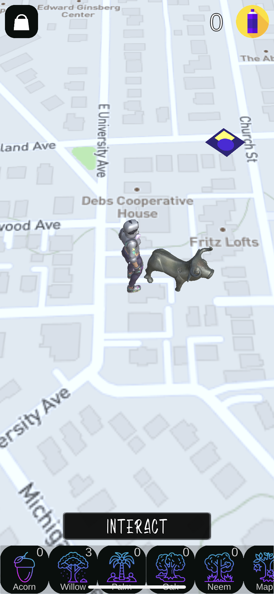

A2GO
Introducing Ann Arbor Go, a localized version of PokemonGo© that encourages players to explore the city's local artist's murals. In this game, players plant and protect trees from squirrels in AR mode, earning in-game currency as they travel. Players receive bonuses for visiting murals, and the ultimate goal is to visit all the murals on the map. My specific roles on the project included designing and implementing the game's user interface, designing and implementing game landmarks, and developing the feature that involves defending the player's trees from squirrels.
This mobile game was built using Unity's AR plugins and MapBox. The icons are by artist Eucalyp.
See it in action on Youtube!